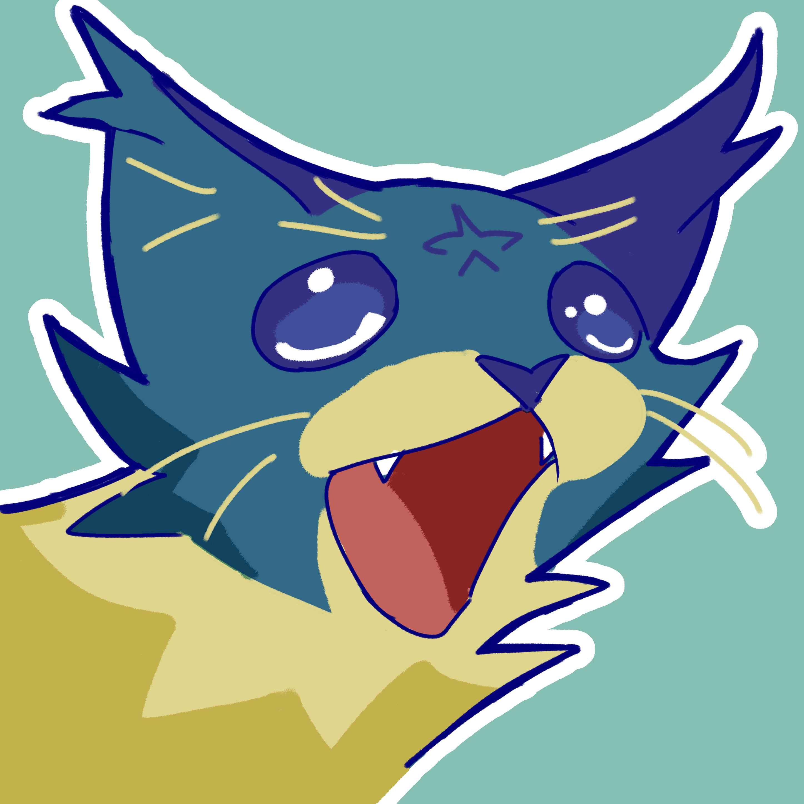
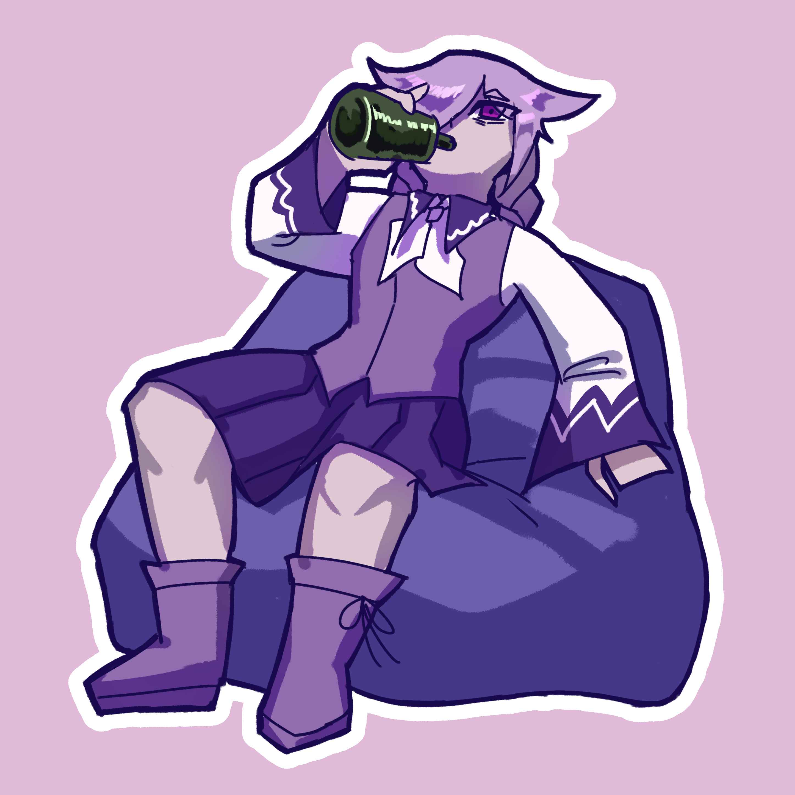
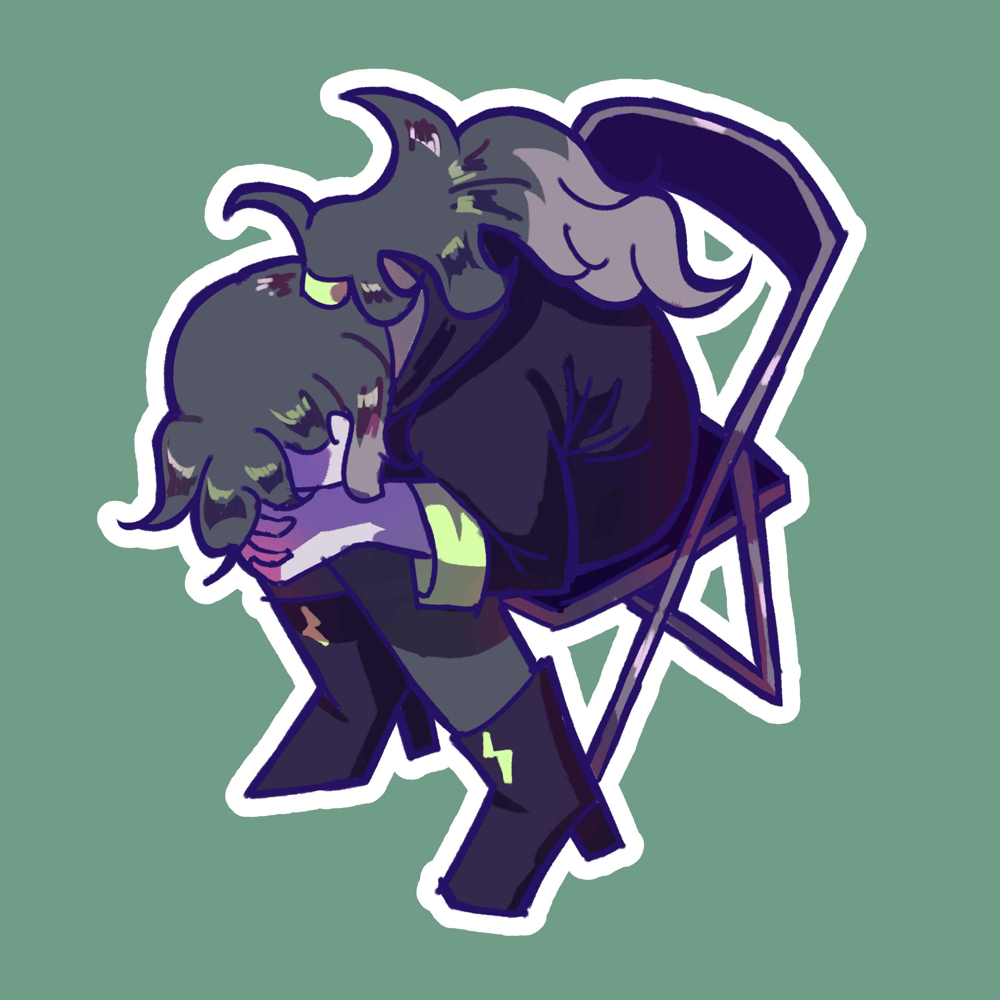
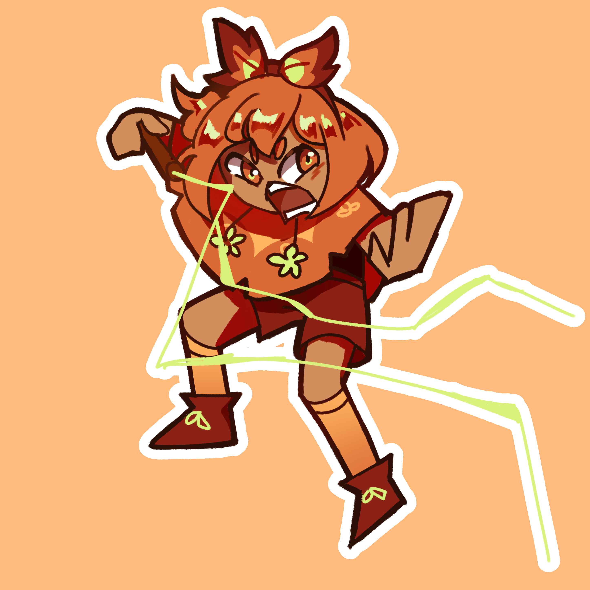
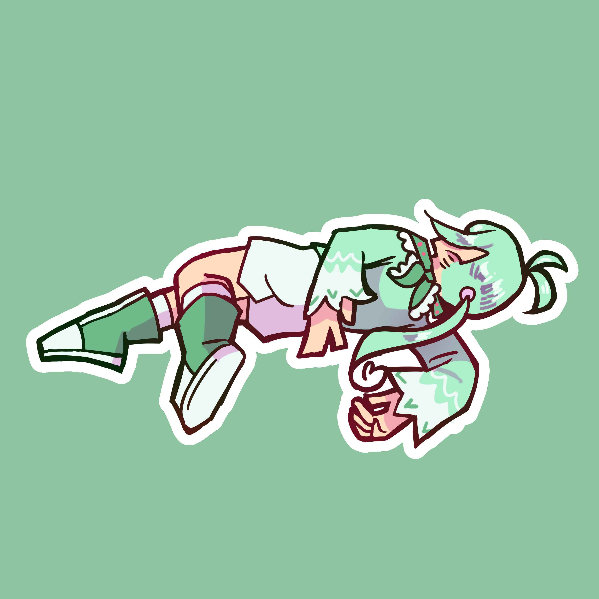
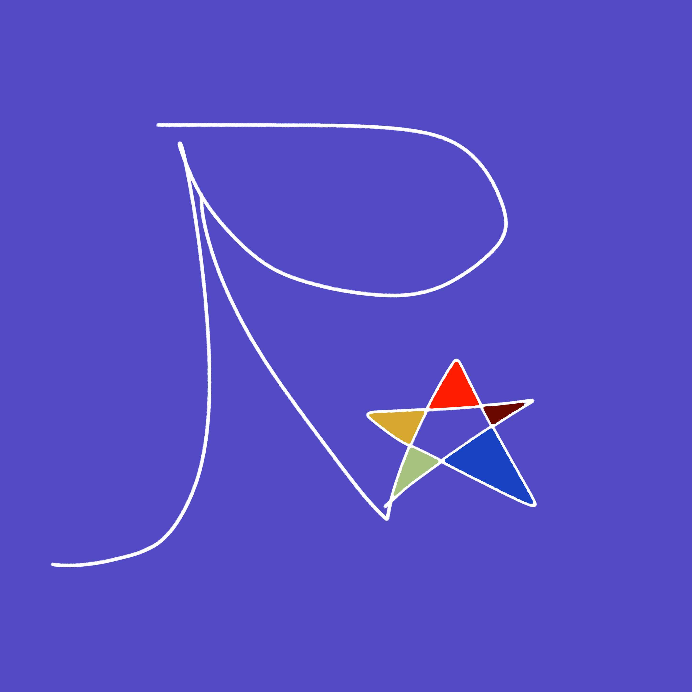
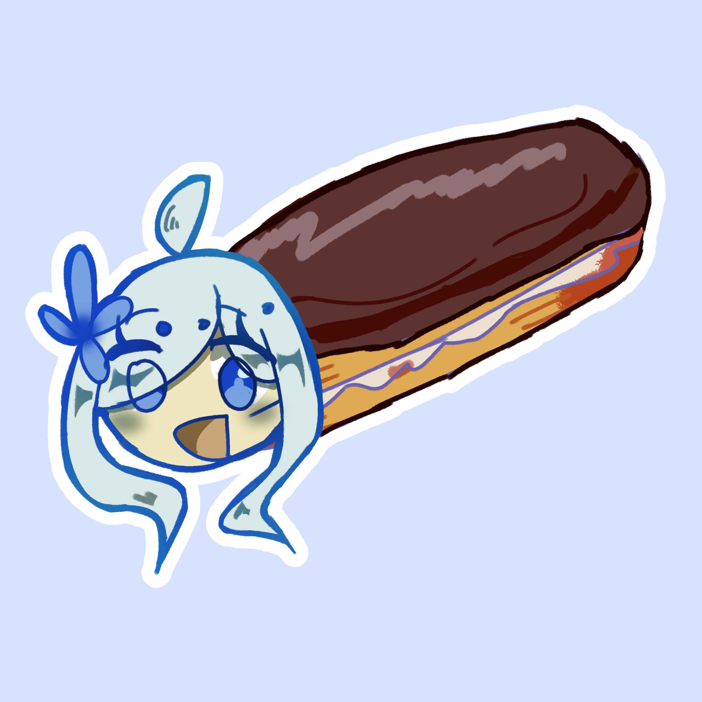
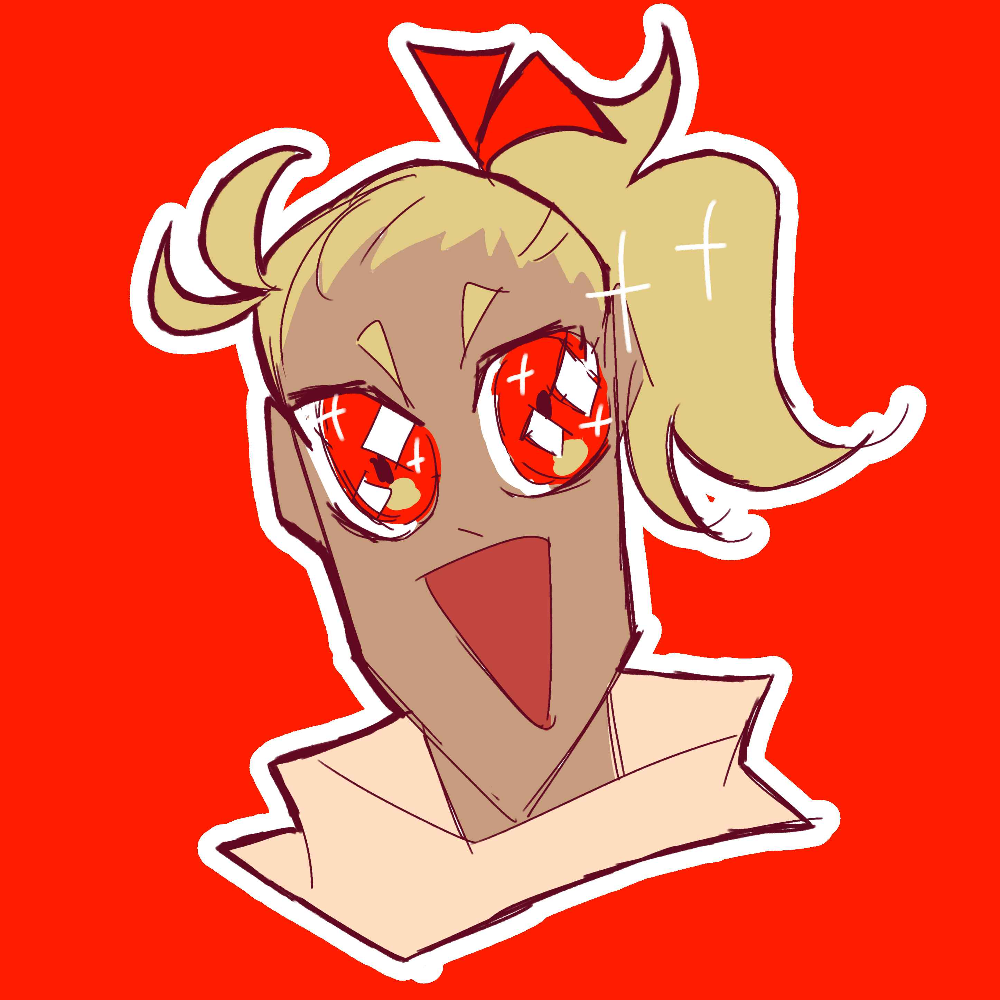
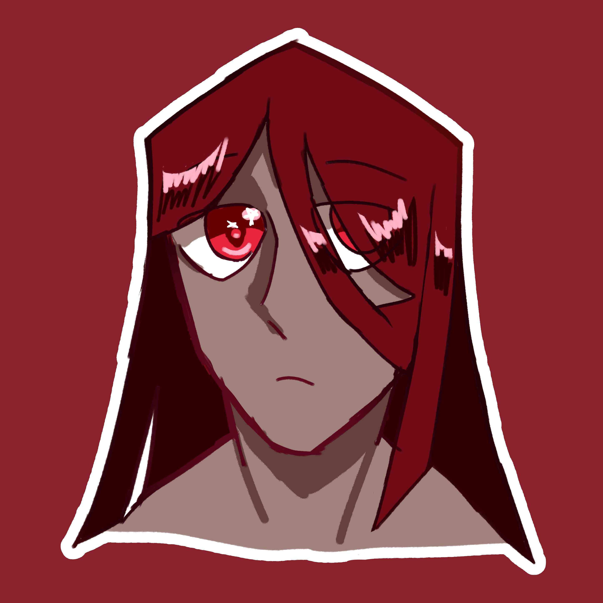
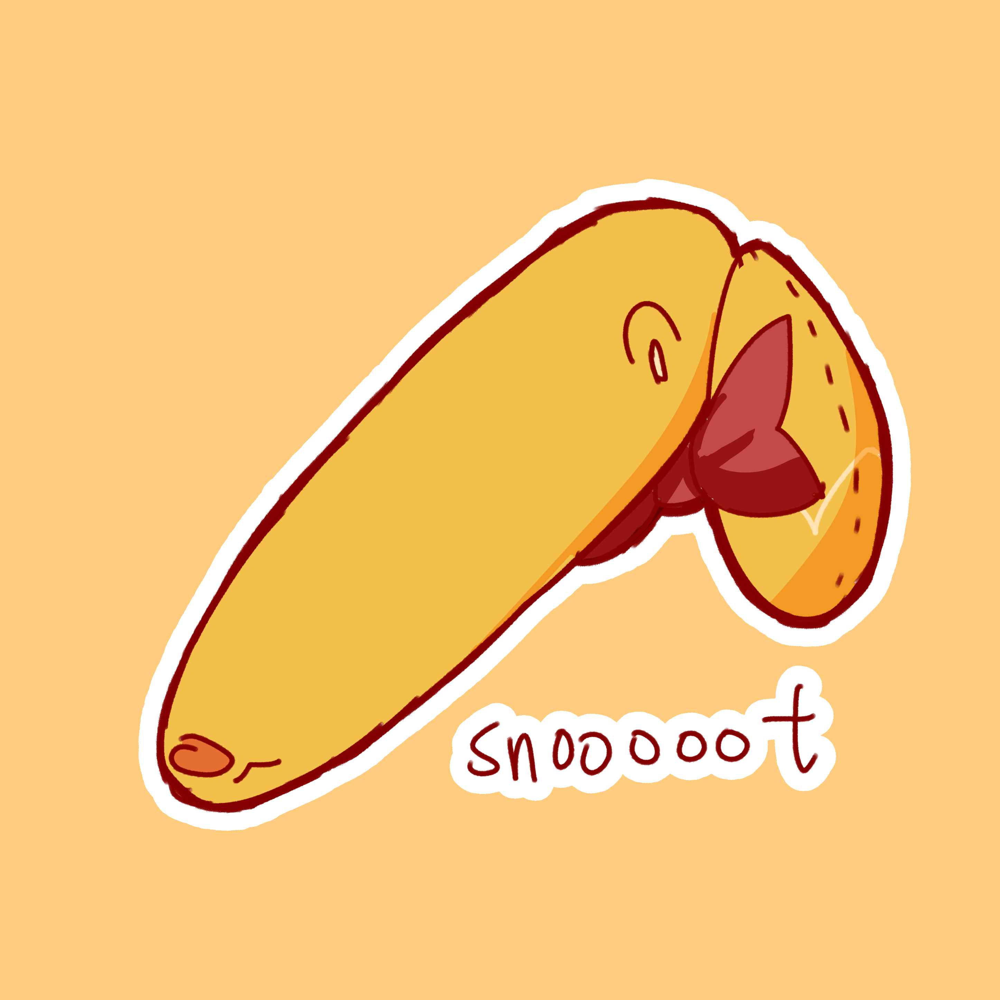

April Fools Special 2024!
If you are here in the fews days around April Fools, you might have noticed some... special changes in my website. It would be unfair to those who happened to miss that event, so I archive the images here!
( 01 Apr 2024 )
Cosmos
I'm sure many people has seen this meme. The cat in the meme is called Inkky, the meme is so iconic my first idea for Cosmos is to draw her as this, man I love how dumb she looks here.

Lavender
This one isn't based off one picture, but a series of images where cosplayers are drinking from a bottle of wine. You can look up 'cosplayer drinking' and many pics of cosplayers drinking wine will show up.
Grey
Uh, no comment?
Ruth
I feel like this one is less obvious, but this is actually based off an iconic vine. It might be something Ruth will do despite her peaceful nature, and yes she might learn to swear in the future.
Mira
Featuring Mira: As the dead one
RS
The effect might be stronger if I used MS paint instead
Claire
Get it? ECLAIRE?
Solar
IDK if there are better memes out there, but shittily drawn Solar is funny enough.
Jaspers
Running out of ideas at this point, but sometimes I imagine if Jaspers have big irises instead, so I drew this. It still looks too normal, but any bigger will make him look very creepy.
Penelope
Let me do it for you~~~~ (I should've made her snoot even longer)
For those who doesn't have a profile pic, I will have to skip them. Sorry guys, especially Bun, as there's a meme that suits them very much.